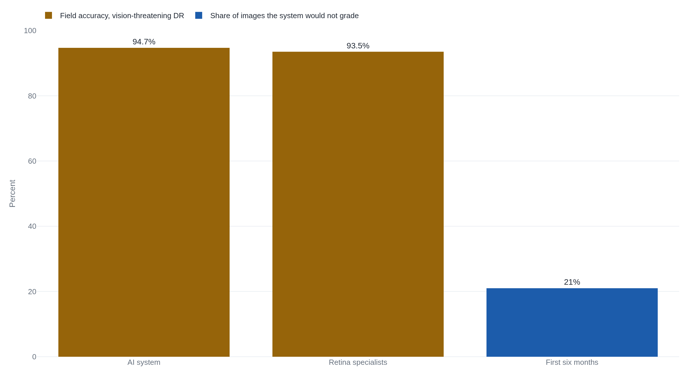

Google's eye-screening AI rejected a fifth of the photos nurses took in Thai clinics
The model diagnosed diabetic eye disease as accurately as a retina specialist. Its quality bar, tuned high for patient safety, collided with undarkened rooms, slow clinic internet, and photographs it judged too flawed to grade.
Why this matters
Almost every claim you meet about medical AI, or any AI, arrives with a number: it matches specialists, it scores in the high nineties. That number is measured on a test set someone curated. This lesson follows one system where the number was real and the deployment faltered anyway: a diabetic-eye screening model that scored like an ophthalmologist and then, in Thai clinics, refused to grade a fifth of the photographs nurses actually took. By the end you will know why a genuine benchmark score can tell you almost nothing about how a system will serve the people it screens once real cameras, clinics, and connections are in the loop. You will also know what to ask about a deployment that no benchmark answers.
- 01
- Two Waymo cars hit the same towed truck minutes apart: the same failure, distribution shift, as the cause of a self-driving crash.
- 02
- Epic's sepsis alarm missed two-thirds of the patients it was built to catch: the contrast case, a medical model that really was inaccurate in the field.
A screening tool that scored like a specialist
Diabetic retinopathy is damage to the small blood vessels at the back of the eye. Catching it means someone examining a photograph of the retina for the tiny hemorrhages and swelling that mark the disease. There are rarely enough eye doctors to examine every one. Thailand had about 1,500 ophthalmologists and 200 retinal specialists for roughly 4.5 million people with diabetes, one eye doctor for every three thousand patients who might need one.1 The Ministry of Public Health wanted 60% of diabetic patients screened each year and had not reached half since 2013.1
A deep-learning model looked like a way to close that gap. In 2016 a team at Google trained a neural network on 128,175 retinal photographs. A panel of 54 ophthalmologists and senior residents graded each image three to seven times, and the majority vote became the answer the model learned to reproduce.2 On a held-out set of curated images it reached 90.3% sensitivity and 98.1% specificity for referable disease: it caught most of the eyes that needed a doctor and rarely flagged one that did not.2 Measured later against Thailand's own national-program graders, the system cut the false-negative rate by 23%, missing fewer referable cases than the human graders it was compared with.3
On that record, Google Health, working with Rajavithi Hospital in Bangkok and Thailand's Ministry of Public Health, took the system into real screening clinics, where nurses already photographed patients' eyes for a doctor to read later.1 Between late 2018 and 2020 it was deployed at three clinics in Pathum Thani, and a team of Google researchers visited eleven clinics there and in Chiang Mai to watch what happened when nurses, not benchmarks, put it to work.1
The images the clinics actually sent
The trouble began at the camera. The system had, in the researchers' words, "stringent guidelines regarding the images it will assess." It "only assesses the highest-quality images," and if a photograph had "a bit of blur or a dark area" it declined to grade the image at all, "even if it could make a strong prediction."1 This was deliberate, chosen for patient safety: better to return no answer than a wrong one. On the curated photographs the model had trained and been tested on, every image cleared that bar, because lab images are taken to clear it.2 Clinic images were not.
Of 1,838 images put through the system in the first six months across the three Pathum Thani clinics, 393 came back ungradable, a little over one in five.1 Some clinics photographed patients in rooms that could not be fully darkened, so stray light reached the image. One clinic's camera needed repair. Some sites had stopped using the dilating drops that widen the pupil for a clean shot.1 A report in MIT Technology Review described nurses "scanning dozens of patients an hour and often taking the photos in poor lighting conditions," and put the rejected share at "more than a fifth."4
For a nurse, an ungradable verdict meant doing the work again. She would reposition the patient and retake the photograph, two to four minutes each time, and she could not keep trying, because the flash left the pupil too constricted for a clean third attempt.1 One nurse, faced with an eye the system kept refusing, tried to build a single usable picture from two flawed ones, the top of the retina from one photograph and the bottom from another. The system could not take a composite. It needed one good image per eye, and it had already decided it had none.1
What the gate cost the room
Ungradable images were the most visible failure. The connection was the next one. The system did its grading in the cloud, so every photograph had to travel there and back, and the clinics' internet was not built for it. On a strong connection a result came back in a few seconds; on a weak one a single image took 60 to 90 seconds to upload.1 At one clinic a two-hour internet outage cut the patients screened that day from about 200 to about 100.1
Then there was the referral. A patient the system flagged had to travel to Pathum Thani Hospital, an hour away, for a specialist to confirm the finding.1 Nurses knew what that trip cost a working patient, and some told patients what taking part could mean before they consented. At one clinic, by a nurse's estimate, 40 to 50% of eligible patients declined to enroll.1 These were people who had already come to have their eyes checked, opting out of the screening they had come for, because the workflow around the tool made saying yes expensive.
TechCrunch, reviewing the same study, judged that Google's own blog post about it "presents a rather sunny interpretation of events," given documented problems that included the lost throughput and nurses steering patients away from the program.5 Google's researchers did change the system in response. Writing on the company's blog, the field study's lead author, Emma Beede, said the team amended the protocol. An eye specialist now reviews an ungradable image and the patient's records "instead of automatically referring patients," to spare them "unnecessary travel, missed work, and anxiety about receiving a possible false positive result."6 The full prospective program built the same safeguard in from the start: a retina specialist over-read every image.7
Why a good model still failed the clinic
When the full program was run to completion and reported in The Lancet Digital Health, the model's field accuracy for vision-threatening disease was 94.7%, close to the 93.5% of the retina specialists who over-read the same images.7 The diagnosis transferred. What did not transfer was everything the diagnosis depended on, and a fifth of the images never reached it.

A benchmark answers one narrow question: given an image the system agrees to score, how often is it right? It says nothing about how many real images the system will agree to score, how long each takes to upload, or how far a flagged patient must drive. The 90.3% sensitivity from the lab was true, and it was also silent about all of that.
The model was trained on curated photographs, taken and selected to be gradable.2 The clinics produced photographs shot under fluorescent light, sometimes on a camera that needed repair, by nurses with about ninety seconds per patient.1 This is distribution shift, the gap between the data a model learned on and the data it meets in the world, which the course has met before in a self-driving crash. Here it wears a second face. The model did not misread the new images. Its quality gate, set high for patient safety, looked at the messier field images and refused a fifth of them. On the images it did grade, the diagnosis held, so the same shift that might have shown up as wrong answers showed up instead as no answer at all.
The comfortable reading is that the clinics simply could not keep up with the technology. The evidence points the other way. An outside analysis by Chinasa Okolo, a researcher unaffiliated with Google, located the failure earlier, in how the tool was brought in. Its verdict: "The lack of understanding around the existing workflows... led to the failures of this AI system once deployed." Studying those workflows, Okolo wrote, "would have benefited the development of the system had they occurred pre-deployment."8 The clinics were the environment the system was for. The bench number described the images the model accepted, and nothing about the place that produced them.
Where a clean benchmark hides the gap
That distance sits inside almost any system sold on a single benchmark. A speech-recognition model scored on clean audio meets a noisy room. A risk model checked on one hospital's patients meets another hospital's. In each case the published number is honest about the test and silent about the deployment, and the deployment is where the patients are. The Lancet team, having run the whole program, stated the general rule plainly: "socioenvironmental factors and workflows must be taken into consideration when implementing a deep-learning system within a large-scale screening programme."7
What Google's team did that is uncommon was to go and look before the gap surfaced as harm. Most deployments never produce a record of the field at all: the benchmark is published, the product ships, and the distance shows up only as complaints. Two independent experts quoted in MIT Technology Review made that point. Michael Abramoff, an eye doctor and computer scientist at the University of Iowa, said he was glad Google was "willing to look into the actual workflow in clinics." Hamid Tizhoosh of the University of Waterloo called the work "a crucial study for anybody interested in... actually implementing AI solutions in real-world settings."4
The takeaway
A benchmark score tells you how often a system is right about the inputs it accepts, under the conditions it was tested in. It does not tell you how many real inputs it will accept, how long each will take, or what the people around it must do when it says no. Google's retinopathy model was as accurate in a Thai clinic as a retina specialist, and it still lost patients to a quality gate, slow internet, and an hour's drive to a referral. So when you next meet a system that "matches specialists" or "scores in the high nineties," the useful question is not whether the number is real. It is whether anyone has watched the system work where it will be used, and what happened to the people in the room when it did.
- 01
- Okolo, "AI in the 'Real World'": an outside case study of this deployment and what human-centered study before it would have caught.
- 02
- Ruamviboonsuk et al., Lancet Digital Health (2022): how the full national program scored once it was run to completion.
Sources
- ACM CHI 2020 · Beede et al., A Human-Centered Evaluation of a Deep Learning System Deployed in Clinics to Screen for Diabetic Retinopathy
- JAMA · Gulshan et al., Development and Validation of a Deep Learning Algorithm for Detection of Diabetic Retinopathy in Retinal Fundus Photographs (2016)
- npj Digital Medicine · Ruamviboonsuk et al., Deep learning versus human graders for classifying diabetic retinopathy severity in a nationwide screening program (2019)
- MIT Technology Review · Will Douglas Heaven, Google's medical AI was super accurate in a lab. Real life was a different story (2020)
- TechCrunch · Devin Coldewey, Google medical researchers humbled when AI screening tool falls short in real-life testing (2020)
- Google · Emma Beede, Healthcare AI systems that put people at the center (2020)
- The Lancet Digital Health · Ruamviboonsuk et al., Real-time diabetic retinopathy screening by deep learning in a multisite national screening programme (2022)
- arXiv · Chinasa T. Okolo, AI in the "Real World" (NeurIPS 2020 workshop)